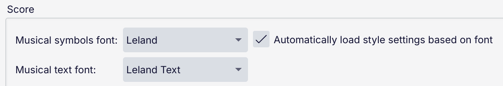

Music fonts
MuseScore Studio includes several open-source music notation fonts. The default is Leland, created for MuseScore 3.6 and named in honor of Leland Smith, the creator of the SCORE notation software.
In order for a music font to be used in MuseScore, it must be compatible with the Standard Music Font Layout (SMuFL) specification created by Steinberg, which provides a mapping for musical symbols in fonts. MuseScore includes a range of other open-source SMuFL fonts, including two by Steinberg, Bravura (the default music font in Dorico) and Petaluma (a jazz font), Emmentaler (the default font in MuseScore before version 3.6) and MuseJazz (our very own jazz font), among others.
Bravura is the 'reference' SMuFL font and contains every glyph in the specification - almost 3,000 in total. When using any other font, if any glyph is not available, Bravura will be used as the fallback.
Choosing music fonts
To choose the music font to use in your score, open the Style dialog and go to the Score page.

SMuFL fonts come as pairs: a musical symbols font and a musical text font. They have the same character set, but different uses.
- The musical symbols font is used for almost all the notation in a score.
- The musical text font is primarily intended for use in other applications, such as word processors, when you want to insert musical symbols into running text, but is used in notation software too when you need to include musical symbols as part of text items. One example is the note symbols in metronome marks.
When you select a Musical symbols font from the dropdown, the corresponding Musical text font will be chosen automatically, but not vice versa.
SMuFL fonts can also include information about certain engraving settings, mostly concerning the thickness of lines and other items which are drawn as graphics in notation software rather than using font symbols (see the SMuFL specification for the full list). When Automatically load style settings based on font is on, then when you choose a musical symbols font, these settings will be applied. It is generally a good idea to leave this checkbox on this as the fonts are designed with certain graphical properties in mind.
Using music symbols in text items
If you use musical symbols as part of a text item in MuseScore, whether the musical symbols or musical text font is used depends on the type of the item.
These item types use the musical symbols font:
- Dynamics
- Ottavas
- Tuplets
- Pedal markings
- Harp pedal diagrams
- String tunings
All other types use the musical text font.
When musical symbols appear as part of a text item, they can be sized separately from the surrounding text. This works differently depending on whether the musical symbols font or the musical text font is being used.
For musical symbols, the size is called Scale or Musical symbols scale and is represented as a percentage of the glyph's default size, which is always relative to the staff to which the item is attached. (This is because all glyphs in a musical symbols font are designed in proportion to each other. This can seem counterintuitive when the symbols themselves resemble text, as in the case of dynamics.)
For musical text, the size is represented as a point size, which is relative to the staff only if Follow staff size is turned on for that style or specific item.
Using other music fonts
It is possible to use SMuFL fonts in MuseScore Studio other than those included. (There is a list on the SMuFL website, some open source and some commercial.)
A SMuFL font usually comprises three files:
- The musical symbols font (e.g.
Leland.otf) - The musical text font (e.g.
Leland Text.otf) - The metadata file for the font (e.g.
Leland.json)
The two font files should be installed on the system in the usual way. The metadata file is something specific to SMuFL musical symbol fonts and it must be installed in a specific location which depends on your operating system. See the SMuFL specification for platform-specific instructions. Some fonts may come with an installer which will take care of all of this for you.
If the metadata file is not found in the expected place, MuseScore (and other notation software) will not recognize the font as as a SMuFL font and it will not be available to use. The file contains information about the metrics of the symbols and information for notation software about how items are arranged or can be connected to each other, as well as the engraving settings mentioned above. It is not relevant to the musical text font.
If you only want to use the font in MuseScore and are not concerned about it being available in any other software, there is another option. MuseScore will also search for SMuFL fonts in a specific folder and will make available any that it finds there. By default this folder is Documents/MuseScore4/MusicFonts inside your home directory, but you can specify a different location in Preferences -> Folders -> Musical symbol fonts.
To add a SMuFL font in this way:
- Create a subfolder inside the MusicFonts folder, which must have exactly the same name as the font (e.g. Leland, Bravura)
- Copy both of the font files and the metadata (
.json) file into that subfolder
After installing fonts (by either method), if MuseScore is running you will need to restart it before the new fonts will be detected. Once you have done so, the fonts will be shown in the dropdowns in Style -> Score.
Currently, Sibelius and LilyPond are not SMuFL-compatible, so fonts used in either of those two programs will not work in MuseScore. Finale added SMuFL support with v27 in 2021, so fonts from before this time will not work in MuseScore either. Finale made SMuFL versions of many of their fonts at that time, which are now freely available.
Only the music fonts included with MuseScore Studio are available on MuseScore.com. If you upload a score using a different font, a replacement font will be used, which may drastically alter the layout and appearance of your score.